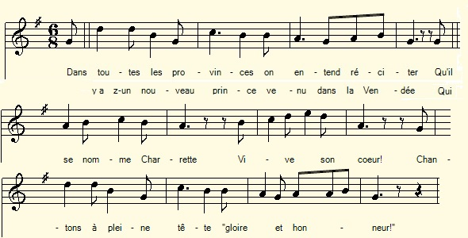
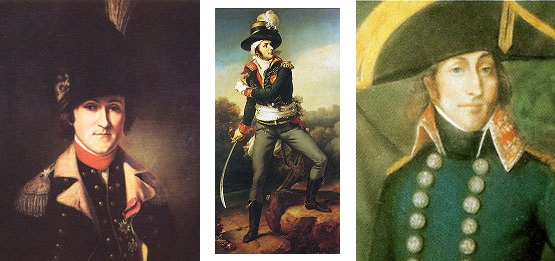

Chanson sur Charette
Song on Charette
Chant tiré du 2ème Carnet de collecte de La Villemarqué (pp. 75/39 - 76
Mélodie
"Henri V"
Arrangement Christian Souchon (c) 2018
|
A propos de la mélodie Bien que "Mais son coup a manqué" rappelle le chant révolutionnaire "La Carmagnole", cette mélodie ne convient pas. Celle qui accompagne le chant "Henri V" notée par l'Abbé François Cadic, retenue ici à titre d'illustration, ne comporte pas l'opposition entre les 2 premiers vers (7+6 pieds) et les 2 derniers vers de chaque strophe (7+4). Cette division du texte en quatrains est reprise du manuscrit. En réalité, les rimes internes ("provinces, prince, Charette, tête...") en font un poème composé de strophes de 8 vers. A propos du texte |
About the tune Though "But his attempt failed" is reminiscent of the revolutionary song "Carmagnole", this melody does not suit the poem at hand. The tune set to the song "Henri V" recorded by the Rev. François Cadic, used here as an illustration, does not feature the opposition between the first 2 verses (7 + 6 feet) and the last 2 verses ( 7 + 4 feet) of each stanza. This division into quatrains is taken from the manuscript. In reality, internal rhymes ("provinces, prince, Charette, tête ...") make it a poem composed of stanzas of 8 verses. About the lyrics |
|
FRANCAIS Page 75/39 1. Dans toutes les provinces / on entend réciter Quil y a-z-un nouveau prince / venu dans la Vendée Qui se nomme Charette [1] / Vive son cur ! Chantons à pleine tête / Gloire et honneur ! 2. Canclaux [2] le général /de ces Républicains Est venu en Vendée / pour battre les chrétiens Mais son coup a manqué / pour le certain Il sest trouvé chassé / de nos terrains. 3. A Nantes [3] lon espère / que vous verrez beau jeu. Des chrétiens en colère / vous feront boire du feu ! En punition du mal / et des forfaits Lon vous prépare un bal / cest pour jamais. 4. Faisons tous une fête / au brave La Rouërie [4] (La Roberie) Son chapeau sur sa tête / et sa plume jolie Comme un foudre de guerre, / son sabre en main Jetant les Bleus par terre / sur le chemin Page 76 5. Lemoine et La Rouërie / sont deux hommes de cur Qui bravent la Nation [5] / ainsi que leur fureur Quand ils sont à la tête / de leurs drapeaux, Ils en font une fête, / rien de si beau ! 6. Cest lainé des Guérin (x) [6], / défenseur de la Foi A tous les citoyens / qui dit z-à haute voix, - Vous crèvrez dans votr ville, / chiens denragés, Comme ils font les chenilles, / la tête aux pieds! - 7. Qui a fait la chanson? / Cest un jeune officier Du premier bataillon (régiment) de ces beaux grenadiers. Si cest à votre goût, / je suis content, Mais que chacun de vous / en fasse autant! |
ENGLISH Page 75/39 1. In all parts of the country, / it's the talk of the town: A new prince but recently / to free Vendée has come You know his name: Charette [1] / Long shall he live! At the top of your voice sing: / Honour and praise! 2. Canclaux [2], the general / of the Republicans He has come to Vendée / to subdue the Christians But his attempt has failed / And without doubt, Since from our hallowed country / We drove him out. 3. In Nantes [3] we'll see to it that / the fight be dire. Angry Christians will make you, / for sure, drink fire! In punishment of evil / unknown before, We are preparing a dance / for evermore. 4. Let's all cheerily welcome / the brave La Rouërie [4] (La Roberie) With his hat cocked on his head / and his plume so pretty No one looked so warlike who/ his sword did sway Throwing the Blues on the ground / along his way! Page 76 5. Lemoine and La Rouërie, / they are two men of heart Who want to brave the Nation [5] / that threats with targe and dart And when in the van marching / they wave their flags, There is upon earth nothing / so fair as these lads! 6. Hark! The elder of Guerin [6], / defender of the Faith, Speaks to all town citizens, / an ominous wraith, - You will die in your cities / as do mad dog's breeds, Or as do caterpillars: / hung by the feet! - 7. Who made this pretty ditty? / Twas a young officer Of the first regiment of / the handsome grenadiers. If my song is to your taste / I am happy, Let each of you repeat it / all o'er the country! Translation Christian Souchon (c) 2019 |
NOTES
|
[1] François Charette de La Contrie (1763-1796) a joué un rôle essentiel dans la guerre de Vendée à la tête de l'Armée catholique et royale, dabord au début de cette guerre (mars-septembre 1793), puis lors de la guérilla du pays de Retz (oct. 1793- février 1795), ensuite lors du Traité de Jaunay en février 1795. Après une trêve de 5 mois, il reprend les armes au moment de Quiberon. Abandonné de ses troupes, il est capturé le 23 mars 1796 et fusillé à Nantes 6 jours plus tard. Il fut surnommé « Le Roi de la Vendée », et Napoléon Ier écrira de lui : « Il laisse percer du génie ». [2] Jean-Baptiste-Camille de Canclaux (1740-1817) commença sa carrière militaire sous lAncien Régime (guerre de Sept-Ans, Ecole de cavalerie de Besançon). Il fut envoyé en Vendée où il est vainqueur à Quimper en juillet 1792. Il combat à Brest et devient le commandant en chef de larmée des Côtes de Brest en avril 1793, avant de défendre victorieusement, avec 12.000 hommes Nantes en juin 1793, contre 50.000 Vendéens. Après avoir été suspendu de son commandement en octobre 1793, il est réintégré un an plus tard et seconde Hoche à la bataille victorieuse de Quiberon (juin 1795). [3] Batailles de Nantes : Il est le dernier à quitter Nantes ; le lendemain, après la retraite de l'Armée catholique et voyant que tout était perdu, il aurait fait un pas de danse par dérision. [4] Armand Tuffin, marquis de La Rouërie, (1751 à Fougères, 1793) est un héros de la guerre dindépendance américaine. Cest dans le présent poème, avant tout, l'organisateur de l'Association bretonne qui, dès juin 1791, imagine une organisation dans laquelle sincrira la chouannerie bretonne, (indépendament dun mouvement similaire en Anjou-Poitou). Le comte dArtois, le futur Louis XVIII, dans un manuscrit inédit lappelle « lAgent de Monsieur dans la Bretagne ». Il mourut le 3 mars 1793, trahi par son ami, le Dr Chevelet. Son cadavre fut exhumé et sa tête tranchée. En fait ce furent lexécution du roi 21 janvier 1793), la persécution dirigée contre les prêtres « insermentés » (à partir de fin 1791) et la levée de trois cent mille hommes (10 mars 1793) qui déclenchèrent vraiment le soulèvement populaire. Louvrage de Ghislaine Juramie, « La Rouërie, la Bretagne en Révolution », fournit une liste détaillée de lEtat-major de l »Association » dont La Rouërie était le commandant en chef et son frère, Marie-Eugène un de ses trois aides de camp. Marie-Eugène mourut le 16 mars 1796. Cest peut-être lui qui est évoqué à la strophe 4, si lon suppose que les opérations contre Nantes avaient déjà commencé (juin 1793). En revanche, on ne sait pas qui était ce Lemoine que la chanson associe à La Rouërie . "Armand". C'est sous ce vocable que ce héros de la guerre dindépendance américaine s'était fait connaître. L'article Wikipédia qui lui est consacré résume ainsi sa carrière en France: "De retour en Bretagne, La Rouërie défend le parlement de Bretagne contre les édits de Versailles, ce qui lui vaut d'être enfermé à la Bastille le 14 juillet 1788. Opposé à l'absolutisme, il voit d'abord avec joie les signes de la Révolution française mais le refus de la noblesse bretonne de députer à Versailles l'empêche de jouer un rôle aux États généraux. Royaliste libéral et franc-maçon, La Rouërie rallie la contre-révolution à la suite de la suppression des lois et coutumes particulières de la Bretagne. Il crée l'"Association bretonne" afin de lever une armée contre les révolutionnaires. Trahi, La Rouërie meurt avant de pouvoir terminer son entreprise mais le mouvement organisé par le marquis devait par la suite être précurseur de la Chouannerie. En août 1791, La Rouërie revenait d'une mission en Angleterre auprès du Duc d'Arois (futur Louis XVIII) s'activait à l'organisation de l'Association Bretonne", mais était encore dans le camp républicain, placé sous les ordres du général Michaud (strophe 23). Ce n'est qu'à partir du 27 mai 1792, date d'un rassemblement au château du marquis qu'il fait l'objet de poursuites de la part des autorités révolutionnaires. Armand de La Rouërie qui vivait dans la clandestinité et était tombé malade le 12 janvier 1793, fut gravement affecté par la nouvelle de l'exécution du roi, il mourut quelques semaines plus tard, le 3 mars 1793. [5] Nation : nom donné par les Bretons à larmée de la République. [6] (x) Louis Joseph Guérin, marchand de beurre et d'ufs, baptisé en 1766. Promu commandant le 15 mars 1793 (Chevas, « Notes sur les communes de la Loire inférieure », p 287.) [Note inscrite par La Villemarqué sur son manuscrit]. |
[1] François Charette de La Contrie (1763-1796) played a key role in the Vendée war at the head of the Catholic and Royal Army, first at the beginning of this war (March-September 1793), then during the guerilla in the country of Retz (Oct. 1793 - February 1795), then during the talks for the Treaty of Jaunay in February 1795. After a truce of 5 months, he took up arms again when the Emigrés landed at Quiberon. Abandoned by his troops, he was captured on March 23, 1796 and shot in Nantes six days later. Napoleon wrote about this "King of the Vendée": "He was not far from being a war genius". [2] Jean-Baptiste-Camille de Canclaux (1740-1817) began his military career under the Ancien Régime (Seven Years' War, Besançon Cavalry School). He was sent to Vendée where he was victorious at Quimper in July 1792. He fought in Brest and became commander-in-chief of the Côtes de Brest Army in April 1793, before defending victoriously Nantes in June 1793, with 12,000 men against 50,000 Vendeans. After being suspended from his command in October 1793, he was reappointed a year later and was second in command under General Hoche in the victorious battle of Quiberon (June 1795). [3] Battles of Nantes: He was the last to leave Nantes; the next day, after the withdrawal of the Catholic Army and seeing that all was lost, he is said to have indulged in a mock dance step. [4] Armand Tuffin, Marquis de La Rouërie, (1751 to Fougères, 1793) was an American Independence War hero. In the present poem he is, above all, addressed as the organizer of the "Breton Association" who, from as early as June 1791, imagined an organization in which the Breton Chouannerie was to be included, (in addition to a similar movement in Anjou-Poitou). The Comte d'Artois, the future Louis XVIII, in an unpublished manuscript calls him "the Agent of Monsieur (=the King's brother) in Brittany". He died March 3, 1793, betrayed by his friend, Dr. Chevelet. His body was exhumed and beheaded. In fact it was the King's execution on January 21, 1793), the persecution of the non-juror priests (from the end of 1791) and the Levy of three hundred thousand men (March 10, 1793) that really triggered the popular uprising. Ghislaine Juramie's work, "La Rouërie, Bretagne en Révolution", provides a detailed list of the General Staff of the "Association" of which La Rouërie was the commander-in-chief and his brother, Marie-Eugène one of his three aides-de-camp. Marie-Eugène died on March 16, 1796. We may assume that stanza 4 hints at hil, if we suppose that the operations against Nantes had already begun (June 1793). On the other hand, we do not know who was the named Lemoine that the song associates with La Rouërie. "Armand". It is under this name that this hero of the American Independence War made himself known, and the Wikipedia article dedicated to him summarizes his career in France as follows: "Back in Britain, La Rouërie defended the Parliament of Brittany against the edicts of Versailles, which earned him imprisonment in the Bastille jail on July 14, 1788. As an opponent of absolutism, he welcomed the first signs of the French Revolution, but as he was denied by the Breton gentry to be a representative in Versailles, he failed to play a role in the Estates General convention. As a liberal Royalist and a Freemason, La Rouërie rallied the Counter-revolution following the suppression of the laws and customs peculiar to Brittany. He created the "Breton Association" aimed at raising an army against the Revolutionaries. Betrayed by his own friends, Rouërie died before he could finish his enterprise, but the organization imagined by the Marquis foreshadowed that adopted at a later stage by the Chouannerie. . In August 1791, La Rouërie who had returned from a mission to England with the Duke of Artois (future Louis XVIII) was busy organizing the "Breton Association", but was still in the Republican camp, under the orders of General Michaud (stanza 23). It was not until May 27, 1792, the date of a meeting at the Marquis' castle, that the Revolutionary authorities started prosecuting him. La Rouërie, who lived in hiding and fell ill on January 12, 1793, deeply felt the news of the King's execution, and died a few weeks later. [5] Nation: a name given by the Bretons to the army of the Republic. [6] (x) Louis Joseph Guérin: A butter and egg retailer, christened in 1766, who was appointed as commander on March 15, 1793. (Chevas, "Notes on the communes of the Département Lower-Loire", p 287.) [Note appended by La Villemarqué to his record]. |

La Rouërie, Charette, Canclaux
"Les Chouans selon Villemarqué", un livre au format A4.  Cliquer sur le lien ou sur l'image ci-dessus |